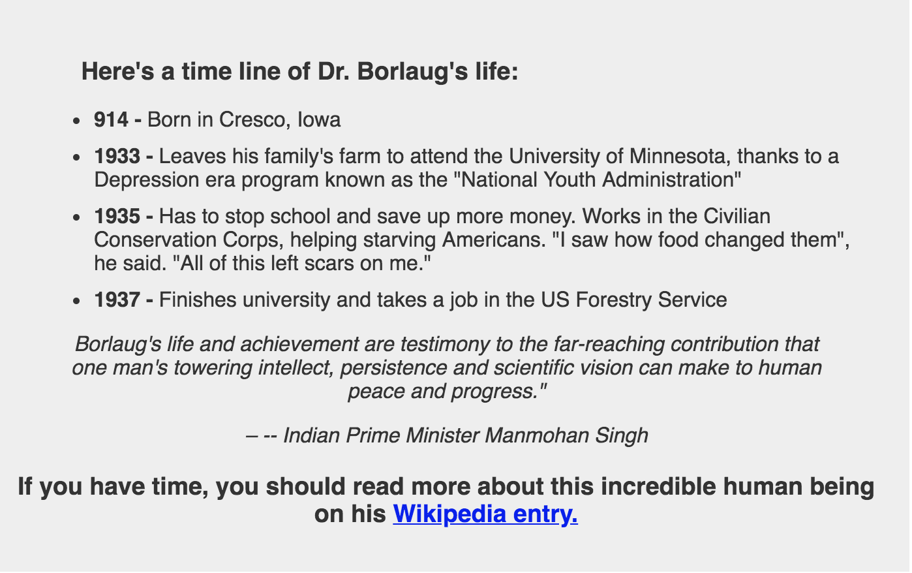
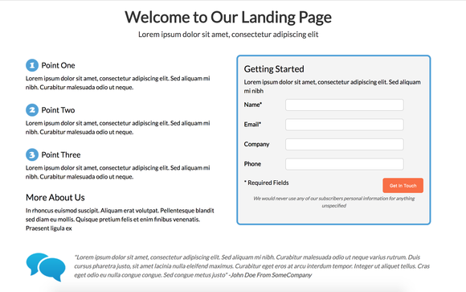

Tribute Page
This is my first project of FCC (Free Code Camp). It is a simple Tribute page using basic HTML and plain CSS and some javascript
This project help me understanding how to use basic html tags like div, list, Img, anchor tag etc. Also learned how to use Id and class atribute for CSS.
I used following technology for this project.
- HTML
- CSS
- Javascript
Landing Page
This is a landing page, to drive traffic for a specific marketing campaign goal.The intend is to focus the visitor soleley on the intent of the page.
This landing page consist of a sign up form, where user need to enter his details.
I used following technology for this project.
- HTML
- CSS
- Javascript
- JQuery